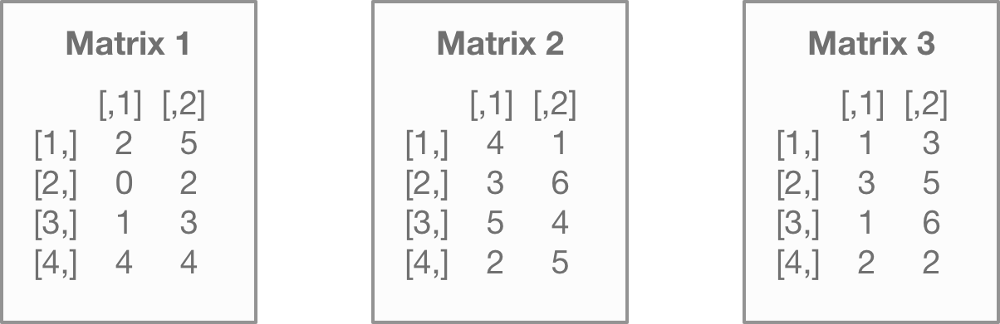
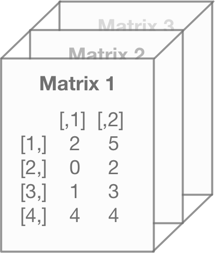
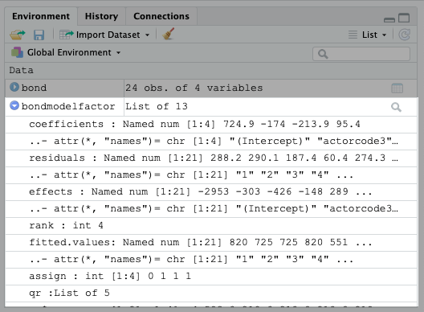

Chapter 4 R Objects Types
R uses objects to store and interact with data and there are various object types. That probably means little to you now, but understanding these differences will make R programming easier – whatever your R programming goals.
In fact, I say it’s better to understand how these objects interact with one another over memorizing every base function and package out there.
That’s different from the approach I took to learning R. When I learned R, I went straight to learning the base functions. You know, the cool stuff that does the regression analysis and confidence intervals and whatnot.
That didn’t work out well for me. I was coming from a SQL background and thought data worked in a similar way with R.
Had I started by learning the objects first, I would’ve saved a lot more time. I would’ve done less data manipulation in SQL or Excel and made simpler, more scalable R code.
4.1 Why Do Objects Matter?
Almost everything you program in R does one of the following:
- Reads an object
- Modifies an object
- Produces an object
- Calls upon a pre-existing object
The simple code below utilizes five different object types:
This code for calculating confidence intervals calls upon a base function, evaluates an existing list, creates several vectors and an array to perform the analysis, and then outputs a matrix. All five are objects. (You can see the function’s script by pasting stats::confint.lm in your console.)
Understanding this will help you understand how R can seem to “guess” what it’s supposed to do based on the data inputs.
4.2 Understanding Object Types Makes It Easier to Transform and Analyze
Pulling data from one object type is different than pulling data from another. This makes it confusing for people who learned about data through SQL, as opposed to other programming languages.
For example, the following code will select most data types in SQL:
That’s different from R. Data selection in R depends on the object type.
For example, using the command [6] next to the object name will select a single value from a vector object…
## [1] 175But that won’t work for a list object below…
## $assign
## [1] 0 1 2To learn how to select, transform, and analyze data in R requires that you learn the underlying structure first. Once you do that, everything else makes more sense.
4.3 The Basic Objects to Remember
Down below are the common objects in R:
- Vectors
- Matrices / Arrays
- Data Frames
- Lists
- Factors
- Functions
We won’t talk about functions in this chapter since they need their own chapter to explain how they work.
4.4 Vectors
Vector is the most basic object within R and there are seven “modes” of vectors: logical, numeric, integer, complex, character, date, and raw.
If that seems to be a lot to remember, don’t worry. I’d focus on remembering logical, numeric, and character right now. Those are the ones you’ll use most often. Others we’ll cover as needed.
Vectors can only be one mode at a time. What that means in plain English is that R can’t have a word and a number in the same vector.
You can use the code below to create and view a logical vector:
## [1] TRUE FALSE TRUEWhat this code does is create a vector using the c(input, input) notation. It then assigns the vector the name v1 using the <– notation. (A shortcut to the <- command is Option+“-”.)
You build a character vector in the same way, only that you use c("input", "input") notation instead:
## [1] "Hola" "Howdy" "Hello"And a numeric vector (like the name suggests) looks like this:
## [1] 1 2 3The code above used the c(n1:n2) notation to create a range of values from n1 to n2, where n1 is 1 and n2 is 4. You can also use notations such as c(n1, n2, n3, n4) or like c(n1:n4, n5:n6).
Play around with the code below and see what kind numeric vectors you can make!
## [1] 4 5 6 1 2 3 4 5 6 7## [1] 1 5 5 2 1 4I said before that vectors can only be one “mode” or data type at a time. What that means is that if you attempt to mix numbers or a logical value with a character, it simply changes all values to a character.
The code down below takes our previously made vectors, one a numeric and the other a character, and combines them into a single vector. As you can see by the quotation " " marks around the output, it’s changed all the numeric values into characters.
## [1] "Hola" "Howdy" "Hello" "1" "2" "3"The vector seems basic and not at all like the data sets you’ll be using. That might make you ask – will I even use vectors?
Yes. Yes, you will.
The more complex object, data frame, is comprised of individual vectors. (We’ll cover more about the data frame object later).
Many functions will also output data in vector form or produce a list composed of vectors.
Vectors are also useful as inputs into other functions, as well. If you look below, I used a function from the censusapi package. I create a vector beforehand and then use it as an input for the function below it.
variable_list <-
c("B15001_003E","B15001_004E","B15001_005E",
"B15001_044E","B15001_045E","B15001_046E")
getCensus(name="acs/acs5",
vintage="2018",
vars=c("NAME",variable_list),
region="state:*")You can use vectors in this way on a larger scale. For example, if you write a long script with many functions and references, vectors allow you to create a set of parameters at the beginning.
4.5 Matrices and Arrays
Matrices and arrays in R are multi-dimensional vectors. Matrices have multiple rows and columns. Arrays have two or more dimensions. (More on that distinction in a bit).
Like their vector counterpart, all matrix / array values must be the same mode or data type – not a mix. That means if you can’t have a numeric value alongside a character value.
Here’s an example of a matrix:
## [,1] [,2]
## [1,] 2 1
## [2,] 0 3Why would R programmers want this? It comes back to the R’s use as a statistical programming language. For example, multiple linear regression often has combined variables, which involves multiplying two matrices together.
Providing these two object types in R that are solely for numeric values makes this easier.
For example, you can multiply these two matrices together with the %*% command and get the same results you would by using matrix algebra:
## [,1] [,2]
## [1,] 2 1
## [2,] 0 3## [,1]
## [1,] 5
## [2,] 7## [,1]
## [1,] 17
## [2,] 21That’s the same as if you did it yourself by hand. \[ \begin{bmatrix} 2 & 1\\ 0 & 3 \\ \end{bmatrix} \begin{bmatrix} 5\\ 7\\ \end{bmatrix} = \begin{bmatrix} 17\\ 21\\ \end{bmatrix} \]
Unless you’re building the functions that calculate this, I doubt you’ll use matrices or arrays all that much. However, it’s handy to know what they are and how they can be used. They’re often the output of functions as well.
Arrays are more complex than their simple 2-D counterpart. Instead of a single set of rows and columns, you’ll have multiple dimensions added on top.
matrix3 <- matrix(c(2,0,1,4,5,2,3,4),nrow=4,ncol=2)
matrix4 <- matrix(c(4,3,5,2,1,6,4,5),nrow=4,ncol=2)
matrix5 <- matrix(c(1,3,1,2,3,5,6,2),nrow=4,ncol=2)
array1 <- array(c(matrix3,matrix4,matrix5),
dim=c(4,2,3))
array1## , , 1
##
## [,1] [,2]
## [1,] 2 5
## [2,] 0 2
## [3,] 1 3
## [4,] 4 4
##
## , , 2
##
## [,1] [,2]
## [1,] 4 1
## [2,] 3 6
## [3,] 5 4
## [4,] 2 5
##
## , , 3
##
## [,1] [,2]
## [1,] 1 3
## [2,] 3 5
## [3,] 1 6
## [4,] 2 2If the output up above looks like gibberish, don’t worry – most people think it’s confusing when they first see it. That’s because the R user interface doesn’t make it visually intuitive as to how the array operates.
Let’s use a picture to visualize this instead. Think of it as if each matrix as a separate entity within the array:

What the array does is simply stack them on top of each other:

Since arrays with three dimensions are merely stacked matrices, that means each matrix within the array must have the same number of columns and rows.
4.6 Data Frames
Data frame is the object type that’s most similar to what you’d find in a SQL database. What I mean by that is that it’s organized and referenced by columns and can have many, many rows.
And most importantly, it can contain both numeric and character values! (Earth shattering, I know!)
I like to think of a data frame as a way to combine vectors. As a matter of fact, you can build a data frame doing just that.
Take this code below and run it. You’ll see that we make individual vectors containing data on James Bond movies1 and we then combine it into a data frame.
filmname <-
c("Skyfall","Thunderball","Goldfinger",
"Spectre","Live and Let Die",
"You Only Live Twice",
"The Spy Who Loved Me","Casino Royale",
"Moonraker","Diamonds Are Forever",
"Quantum of Solace","From Russia with Love",
"Die Another Day","Goldeneye",
"On Her Majesty's Secret Service",
"The World is Not Enough",
"For Your Eyes Only","Tomorrow Never Dies",
"The Man with the Golden Gun",
"Dr. No","Octopussy",
"The Living Daylights","A View to a Kill",
"Licence to Kill")
year <- c("2012","1965","1964","2015",
"1973","1967","1977","2006",
"1979","1971","2008","1963",
"2002","1995","1969","1999",
"1981","1997","1974","1962",
"1983","1987","1985","1989")
actor <- c("Daniel Craig","Sean Connery",
"Sean Connery","Daniel Craig",
"Roger Moore","Sean Connery",
"Roger Moore","Daniel Craig",
"Roger Moore","Sean Connery",
"Daniel Craig","Sean Connery",
"Pierce Brosnan","Pierce Brosnan",
"George Lazenby","Pierce Brosnan",
"Roger Moore","Pierce Brosnan",
"Roger Moore","Sean Connery",
"Roger Moore","Timothy Dalton",
"Roger Moore","Timothy Dalton")
gross <- c(1108561008,1014941117,912257512,
880669186,825110761,756544419,
692713752,669789482,655872400,
648514469,622246378,576277964,
543639638,529548711,505899782,
491617153,486468881,478946402,
448249281,440759072,426244352,
381088866,321172633,285157191)/1000000
bond <- data.frame(filmname=filmname,
year=year,
actor=actor,
gross=gross)And if you use the $ sign, as we discussed before, you can re-select the individual vectors back out of it.
## [1] "Skyfall" "Thunderball"
## [3] "Goldfinger" "Spectre"
## [5] "Live and Let Die" "You Only Live Twice"
## [7] "The Spy Who Loved Me" "Casino Royale"
## [9] "Moonraker" "Diamonds Are Forever"
## [11] "Quantum of Solace" "From Russia with Love"
## [13] "Die Another Day" "Goldeneye"
## [15] "On Her Majesty's Secret Service" "The World is Not Enough"
## [17] "For Your Eyes Only" "Tomorrow Never Dies"
## [19] "The Man with the Golden Gun" "Dr. No"
## [21] "Octopussy" "The Living Daylights"
## [23] "A View to a Kill" "Licence to Kill"If you want to select a single column and maintain the data frame object type, you have to use the following code:
## filmname
## 1 Skyfall
## 2 Thunderball
## 3 Goldfinger
## 4 Spectre
## 5 Live and Let Die
## 6 You Only Live Twice
## 7 The Spy Who Loved Me
## 8 Casino Royale
## 9 Moonraker
## 10 Diamonds Are Forever
## 11 Quantum of Solace
## 12 From Russia with Love
## 13 Die Another Day
## 14 Goldeneye
## 15 On Her Majesty's Secret Service
## 16 The World is Not Enough
## 17 For Your Eyes Only
## 18 Tomorrow Never Dies
## 19 The Man with the Golden Gun
## 20 Dr. No
## 21 Octopussy
## 22 The Living Daylights
## 23 A View to a Kill
## 24 Licence to KillWe’ll go into further detail about selecting, transforming, and analyzing data frames later on. The way you go about it depends on whether you want to make efficient code or you want to make “readable” code for other analysts.
4.7 Factors
Factors take vectors (or data frame columns) and create categories to group the values. Confused? It’s actually fairly simple.
Think back to the data frame we built for the Bond films. If you use the code below, you’ll see the first six rows:
## filmname year actor gross
## 1 Skyfall 2012 Daniel Craig 1108.5610
## 2 Thunderball 1965 Sean Connery 1014.9411
## 3 Goldfinger 1964 Sean Connery 912.2575
## 4 Spectre 2015 Daniel Craig 880.6692
## 5 Live and Let Die 1973 Roger Moore 825.1108
## 6 You Only Live Twice 1967 Sean Connery 756.5444Now let’s say you want a short list of the Bond actors. If you’ll notice in the data set, the actor names like “Daniel Craig” and “Sean Connery” are used repeatedly. These are basically ways to group the data frame with a common field name - the actor who played Bond.
If we tried to get a list of these actors using the levels() function, it wouldn’t work.
## NULLThat’s because it hasn’t been factored yet.
This is a real simply fix. Simply use the factor() function and assign it to the field name within the data frame. You can use the code below to do this.
## [1] "Daniel Craig" "George Lazenby" "Pierce Brosnan" "Roger Moore"
## [5] "Sean Connery" "Timothy Dalton"And this will also show up in the environment tab in the top left.

R used to automatically factor character variables for you. However, that functionality was removed in a recent update.
You may see factors as a not-so-important object type, but that’s not true. It comes in handy with regression analysis. Especially if your categorical variables are numeric.
For example, our Bond data frame may not include the actor name. It could simply have a number between 1 and 6 for the actor - with Sean Connery as 1 and Daniel Craig as 6. That means a regression analysis would’ve analyzed the actor as a continuous variable by default!
This also comes up with experiments that analyze the impact of medicine. It’s not uncommon to label one drug as 1 and another drug as 2. That means you’d have to factor those drug codes so that your regression analysis reads them correctly.
4.8 Lists
Lists are objects that usually store other objects in a nice bundle. Those objects could be vectors, other lists, data frames, etc.
Many of the more complex R base functions produce lists. A common one is produced by the lm() function.
Use the code below to build a model with the James Bond data:
Now you can see the list this produces in the environment tab. As you can see, there’s a lot in this list.
 You can also see what’s in the list using the following code:
## [1] "coefficients" "residuals" "effects" "rank"
## [5] "fitted.values" "assign" "qr" "df.residual"
## [9] "contrasts" "xlevels" "call" "terms"
## [13] "model"This gets to the crux of why it’s important to know when you’re dealing with a list. It changes the way you select components of that list.
For example, let’s say you want just the coefficients from a model you had built.
You can use the same $ symbol as before.
## (Intercept) actorGeorge Lazenby actorPierce Brosnan actorRoger Moore
## 820.31651 -314.41673 -309.37854 -269.48336
## actorSean Connery actorTimothy Dalton
## -95.43409 -487.19349However, if you want to select a single coefficient, you have to use a number value afterwards:
## actorRoger Moore
## -269.4834That’s why it’s important to know if you’re pulling from a list or not. It changes the way that you select key parts of the data.
4.9 Functions
Functions are also an object. Most of the time, you’ll be using a built-in function that is in the R base code or in a package you loaded.
However, you may find yourself building your own functions, which is handy if you don’t want to search for a pre-existing one or need something unique to your situation.
We’ll go into more detail about functions in a later chapter because of their complexity.
4.10 Things to Remember
- The key to understanding R is understanding objects
- The object type changes the way you’ll read, transform, and product data
(???)↩︎